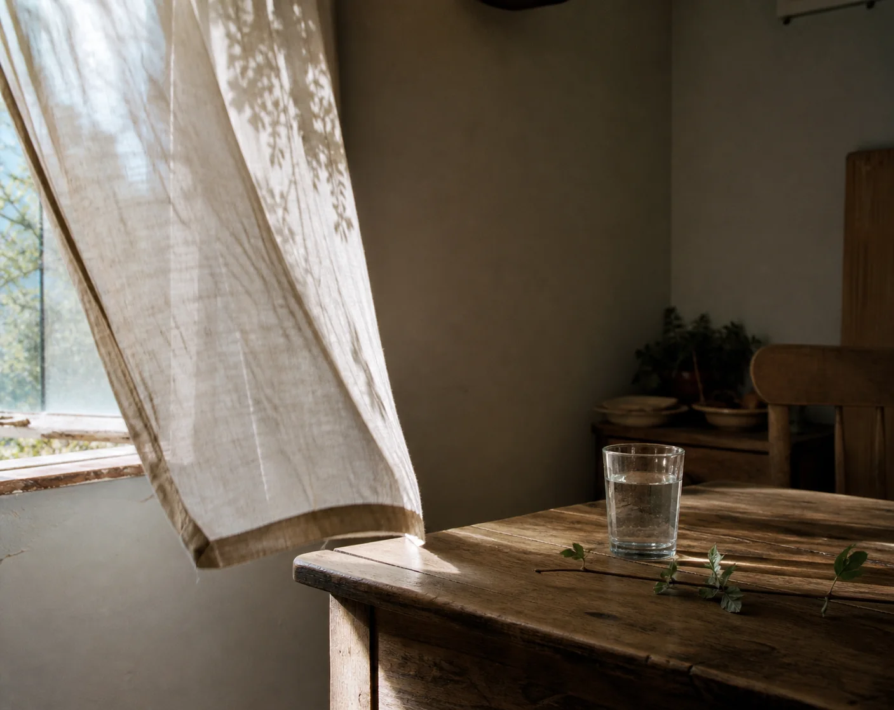

LY
·
←
返回首页
◐
SELECTED & ONGOING
作品
摄影记录光线、时间和偶然；
设计整理信息、关系和选择。
全部
06
摄影
03
设计
03
摄影 · 2026
冬日海岸
01
摄影 · 2026
夜行
02
今天，
也去看看海吧。
产品设计 · 2025
小岛
03

摄影 · 2025
午后房间
04
山止
川行
THE MOUNTAIN & THE RIVER
品牌设计 · 2025
山止川行
05
FLOATING
LIGHT
网站设计 · 2024
浮光
06
这一分类还没有作品。
×
←
01 / 03
→
＋ 放大